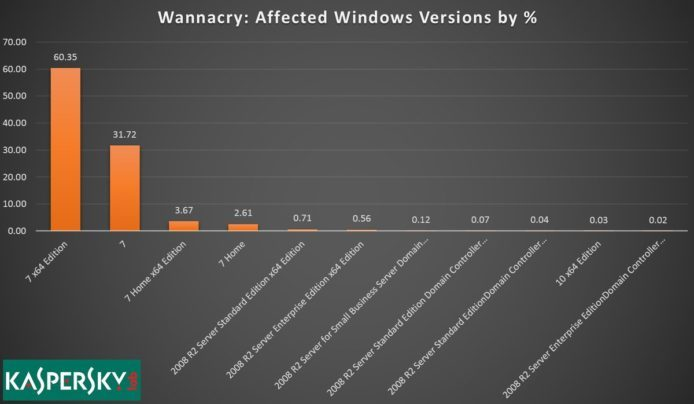

微軟譴責美國政府監控政策引發WannaCry災情!

WannaCry 事件爆發至今已經一星期，經過軟件升級和解密工具的推出，災情已經逐漸緩和。而有統計數據顯示，原來差不多所有中招的電腦都是使用 Windows 7，其他版本系統並非主要受害者。
根據 Kaspersky Lab 的數據顯示，受到 WannaCry 攻擊的電腦之中，差不多 98% 是使用 Windows 7，排行第二的是 2008 R2 Server 伺服器系統，佔 2% 以下，至於使用 Windows XP 的受害者只有極少數。這現象是因為 Windows 7 現時仍然是最普及的系統，大概是 Windows 10 的 4 倍之多，而且 Windows 10 經過自動更新之後也免疫於這次攻擊。而 Windows XP 的佔有率已經比以前下跌不少，很多甚至是脫離網絡的終端機等等，所以不受 WannaCry 影響也是可以理解。
升級緩慢向來是 Microsoft 擔心的問題，追求穩定的用家沒有太大的動力升級 Windows 版本，而今次 Microsoft 在事件爆發後才向 Windows XP 破例推出修補更新，雖然引來不滿，卻是無可奈何的事。始終十多年前的系統如果要繼續維護，實在不符合效益，但基於公衆安全考慮，就不得不作出反應。
作者:李培煌